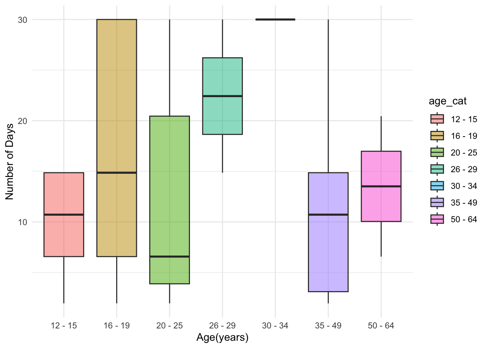

Project Report
Motivation
There are around 48 million people in US using marijuana, and it
could lead to various health impacts. As more and more states legalize
marijuana, marijuana use has been causing significant social impacts and
attracting a vast amount of public attention. The legality of marijuana
use remains controversial in the US. Each state has their own
restrictions on their marijuana laws for both medical and recreational
purposes. Based on data from the “World Population Review,” by July
2022, 14 states have fully legalized the use of marijuana. In this
project, we will evaluate the association among marijuana use and
depression, and we would like to propose recommendations for future
studies and policies.
Research Question
In this project, we aim to:
- understand the association between marijuana use and mental health burdens, using 2019 NSDUH
- stratify or adjust for wide a range of demographic and sociodemographic variables
- provide suggestions on marijuana legalization for future substance prevention programs and policymakers
Data Process AND Cleaning
NSDUH
To study the association between marijuana use and mental health, we
used data from the 2019 National Survey on Drug Use and Health (NSDUH). This
nationwide study is sponsored by the Center for Behavioral Health
Statistics and Quality within the Substance Abuse and Mental Services
Administration (SAMHSA) and is performed annually. It collects
up-to-date information on tobacco, alcohol, drug use, mental health and
other health-related issues in the general population in the US. Every
year, NSDUH interviews approximately 70,000 people aged 12 and older.
We picked the 2019 NSDUH, since it is the newest published version
besides the 2020 data. Due to the COVID-19 pandemic, SAMHSA suspended
in-person data collection on the 2020 NSDUH on March 16, 2020. For the
purpose of data collection, a small-scale in-person data collection was
conducted in selected counties of two states from July 16 to July 22,
2020, with approval. Also, on September 11, 2020, SAMHSA approved a
web-based survey. As NSDUH claimed, in-person and web-based data
collections yielded differences in response and non-response patterns.
Consequently, we highly question the representativity of the 2020 data.
We believe the 2019 data can give us a more accurate and
comprehensive idea about the prevalence and association between
marijuana use and mental health.
For the process of data cleaning, first, we defined our marijuana users as people who used marijuana in the past 30 days, since the duration, frequency, and dose of marijuana use are highly related to mental health. Then, we selected the variables that we wound to focused in this project:
age2: age categoriesmrjmon: past month marijuana usemjrec: time-since-last-aarijuana-ssemr30est: marijuana frequency last monthcoutyp4: county metro/nonmetro statuscatag6: six-level age categoryirmjage: marijuana age of first useamdeyr: past year major depressive episode for adultymdeyr: past year major depressive episode for youthirsex: gendernewrace2: race categoryeduhighcat: education levelincome: income levelirmarit: marital status
Finally, we filtered out all the missing values. More detailed data
manipulation for each visualization graphs can be found in the
EDA section.
Mapping
To create map and show legalization situation for marijuana use in the United States, we find out the up-to-data data in MJBizDaily. MJBizDaily is a website to report Marijuana Business Daily, so we believe data from this website are latest and convincing. In the dataset, it included varibales listed below:
State: States’ name in the United StatesRecreational: whether States are legal for marijuana recreational useYear_legalized_REC: Legalization year for marijuana recreational useMedical: whether States are legal for marijuana medical useYear_legalized_MED: Legalization year for marijuana recreational use
EDA
In this section, we utilize visualizing tools to explore the
marijuana use patterns across age groups and depression prevalence
patterns in the United States.
Age and Time-Since-Last-Marijuana-Use
In 2019 NSDUH, investigators collected information about time-since-last-marijuana-use. The question in the survey was: “how long has it been since you last used marijuana or hashish?” According to the code book, answers to this question are: “within the past 30 days (13.62%),”more than 30 days ago but within the last 12 months (7.47%)“,”more than 12 months ago (22.3%)“,”used in the past 30 days - logically assigned (0.01%), “used in the past 12 months - logically assigned (0.36%),”used at some point in the lifetime - logically assigned (0.39%), “never used marijuana (55.78%)”, “refused (0.03%)”, and “blank” (0.04%)“.
Additionally, we also want to use the age information which was
recoded as age2 in the 2019 NSDHU data set. Researchers
coded participants’ age into 17 categories, including:
- 1 = Respondent is 12 years old
- 2 = Respondent is 13 years old
- 3 = Respondent is 14 years old
- 4 = Respondent is 15 years old
- 5 = Respondent is 16 years old
- 6 = Respondent is 17 years old
- 7 = Respondent is 18 years old
- 8 = Respondent is 19 years old
- 9 = Respondent is 20 years old
- 10 = Respondent is 21 years old
- 11 = Respondent is 22-23 years old
- 12 = Respondent is 24-25 years old
- 13 = Respondent is 26-29 years old
- 14 = Respondent is 30-34 years old
- 15 = Respondent is 35-49 years old
- 16 = Respondent is 50-64 years old
- 17 = Respondent is 65+ years old
In our exploratory step, we excluded people who answered “never used marijuana” since they are not the group we are interested in. Then, we also dropped the logically assigned answers and people who answered “refused” and “blank” to avoid misclassification. Although this can reduce our statistical power, dropped values only count for less than 1% (0.83%) of the entire sample group. We assume dropping them will not affect the data presentation. Finally, we constructed two plots to explore the relationship between age and time-since-last-marijuana-use groups.
1. Age Distributions in Time-Since-Last-Marijuana-Use groups
mari_df %>%
ggplot(aes(x = age2, y = mjrec, fill = factor(stat(quantile)))) +
stat_density_ridges(geom = "density_ridges_gradient", calc_ecdf = TRUE, quantiles = 5, alpha = 0.5) +
scale_fill_viridis_d(name = "Quintiles") +
theme_ridges() +
labs(x = "Age Categories",
y = "Time-since-last-Marijuana-use",
caption = "In Age categories: 1 = 12-yrs-old; 2 = 13-yrs-old; 3 = 14-yrs-old; 4 = 15-yrs-old; 5 = 16-yrs-old; 6 = 17-yrs-old; 7 = 18-yrs-old; 8 = 19-yrs-old; 9 = 20-yrs-old; \n10 = 21-yrs-old; 11 = 22-23 yrs-old; 12 = 24-25 yrs-old; 13 = 26-29 yrs-old; 14 = 30-34 yrs-old; 15 = 35-49 yrs-old; 16 = 50-64 yrs-old; 17 = >=65-yrs-old") +
scale_x_continuous(breaks = c(1,2,3,4,5,6,7,8,9,10,11,12,13,14,15,16,17))+
theme_minimal()Comparing the age distributions among time-since-last-marijuana-use groups, only the curve for “12+ months” group has one obvious peak located at “age = 15” (35-49 yrs-old). Curves for other two groups look more like tri-modal distribution which has more than one peak.
If we compare quantiles among the 3 groups, the “12+ months” group has a very different age distribution. Younger than 34-year-olds contributed to the first two quintiles, while older than 50-year-olds contributed to the last quintile. However, the first two quintiles of the “0-1 month” and “1-12 months” groups were occupied by people younger than 23, and the last quintile by people older than 35. As a result, there are relatively more younger people in the “0-1 month” and “1-12 months” groups.
Additionally, the first 20% of people in the “0-1 month” group are people younger than 19, and the first 20% of people in the “1-12 months” group are people younger than 18 years old. This difference is relatively small, and these two groups have very similar age distribution based on quintiles.
2. Time-Since-Last-Marijuana-Use comparision Among Age Groups
mari_df %>%
ggplot(aes(x = age2, fill = mjrec)) +
geom_histogram(position = "dodge") +
labs(x = "Age Categories",
y = "Time-since-last-Marijuana-use",
caption = "In Age categories: 1 = 12-yrs-old; 2 = 13-yrs-old; 3 = 14-yrs-old; 4 = 15-yrs-old; 5 = 16-yrs-old; 6 = 17-yrs-old; 7 = 18-yrs-old; 8 = 19-yrs-old; 9 = 20-yrs-old; \n10 = 21-yrs-old; 11 = 22-23 yrs-old; 12 = 24-25 yrs-old; 13 = 26-29 yrs-old; 14 = 30-34 yrs-old; 15 = 35-49 yrs-old; 16 = 50-64 yrs-old; 17 = >=65-yrs-old") +
scale_x_continuous(breaks = c(1,2,3,4,5,6,7,8,9,10,11,12,13,14,15,16,17))+
theme_minimal()
According to the histogram plot, in the 13-year-old, 14-year-old, 16-year-old, 17-year-old, 18-year-old, 19-year-old, 20-year-old, 21-year-old, 22-to-23-year-old groups, the time-since-last-marijuana-use for people are most likely be “0-1 month”. However, for people older than 24, the time-since-last-marijuana-use are more likely to be “12+ months”. Consequently, as people get older, they tend to use marijuana less often.
Marijuana Use In The Past 30 Days
In 2019 NSDUH, investigators collected information about #DAYS USED MARIJUANA PAST 30 DAYS. In this part, we excluded individuals who answered “ Don’t Know” “Refused” “Blank” “Legitimate Skip” to this question, which accounted for 14.32% of the total survey. The answers to this question were originally recorded as categories, including “1-2 days” “3-5 days” “6-9 days” “10-19 days” “20-29 days” “all 30 days”. In order to convert the variable to a continuous variable, we randomly assigned a number of days from its days range.
First, let’s explore the marijuana use pattern in the past 30 days of the survey in different age groups.
graph_fendi %>%
group_by(age_cat) %>%
summarise(days = sum(days30)) %>%
knitr::kable(digits = 0)| age_cat | days |
|---|---|
| 12 - 15 | 102 |
| 16 - 19 | 473 |
| 20 - 25 | 279 |
| 26 - 29 | 45 |
| 30 - 34 | 30 |
| 35 - 49 | 70 |
| 50 - 64 | 30 |
| older_than_65 | 0 |
This table shows the cumulative numbers of days used marijuana in past 30 days in each age range. There were 56136 individuals participating the 2019 NSDUH survey. We can see that people who aged between 16 and 19 years accumulated the most number of days of marijuana using in the past 30 days of the survey, followed by those who aged between 20 and 25 years.
1. Number of Days Used Marijuana in Past 30 Days
graph_fendi %>%
filter(days30 != 0) %>%
ggplot(aes(x = age_cat, y = days30)) +
geom_boxplot(aes(fill = age_cat), alpha = .5) +
labs(x = "Age(years)", y = "Number of Days") +
theme(plot.title = element_text(hjust = 0.5)) +
theme_minimal()
This graph shows the distribution of the numbers of days used marijuana in past 30 days of each individual. Those aged between 16 and 25 years had the widest range, while people who aged between 26 and 29 years had the highest mean for number of days used marijuana in past 30 days.
2. Percentage of Individuals Used Marijuana in Past 30 Days By Metro Area
Now, let’s take a look at the marijuana use pattern in the past 30 days of the survey in different types of metro areas.
graph_fendi %>%
mutate(coutyp4 = as.character(coutyp4),
coutyp4 = recode(coutyp4,
"1" = "Large Metro", "2" = "Small Metro", "3" = "Nonmetro"),
coutyp4 = fct_relevel(coutyp4, "Large Metro", "Small Metro", "Nonmetro")) %>%
group_by(coutyp4) %>%
summarise( used30_percent = round(sum(use30)/n()*100, 2)) %>%
ggplot(aes(x = coutyp4, y = used30_percent)) +
geom_bar(stat = "identity", width = 0.5, fill = "steelblue") +
geom_text(aes(label = used30_percent), vjust = 1.6, color = "white", size = 3.5) +
labs(x = "Metro Area", y = "Percentage(%)") +
theme(plot.title = element_text(hjust = 0.5)) +
theme_minimal()We can see that the marijuana use patterns in the past 30 days did not vary much across different metro areas. Slightly more individuals from the “large Metro” area (0.17%) used marijuana in the past 30 days of the survey than the other two types of metro areas.
Age When People First Started Using Marijuana
info_scatterplot = info_scatter %>%
filter(irmjage != 991) %>%
group_by(irmjage) %>%
summarise(number_people = n()) %>%
ggplot(aes(x = irmjage, y = number_people)) +
geom_point() +
geom_smooth() +
labs(x = "Age of first used marijuana", y = "Frequency(number of people)",
title = "Age When First Used among people who used MARIJUANA/HASHISH") +
theme_minimal()
info_scatterplot In this part, we created a scatter plot to show the age when first used MARIJUANA/HASHISH and frequency of people in each year. We excluded people who never use MARIJUANA/HASHISH in this plot. Because, without doubts, most people never use MARIJUANA/HASHISH. In our dataset, there are 31340 people who never use MARIJUANA/HASHISH. Therefore, after excluding people who never use MARIJUANA/HASHISH, it is more clear to see the distribution of Age when First Used among people who used MARIJUANA/HASHISH.
From this plot, we could conclude that most people who used Marijuana started between 10 and 30 years old when first used marijuana. So, it is necessary to focus on youth population during our further steps.
Depression Prevalence Pattern
Now, we have finished exploring the marijuana use pattern in the United States. In this last part, we would like to show the prevalence of depression in the United States and how the prevalence varies across different geographic areas among youths and adults. The association between marijuana use and depression is explored under the tab Statistical Analysis.
Looking at the graph below,we can see that depression is more prevalent among adults than youth across all three metro areas. Regardless of the age group, depression is more prevalent in the non-metro and the small-metro area than the large-metro area.
graph_fendi %>%
mutate(coutyp4 = as.character(coutyp4),
coutyp4 = recode(coutyp4,
"1" = "Large Metro", "2" = "Small Metro", "3" = "Nonmetro"),
coutyp4 = fct_relevel(coutyp4, "Large Metro", "Small Metro", "Nonmetro")) %>%
group_by(coutyp4) %>%
summarise( youth = round(sum(youth_dpr, na.rm=TRUE)/n()*100, 2),
adult = round(sum(adult_dpr, na.rm=TRUE)/n()*100, 2)) %>%
pivot_longer(
youth:adult,
names_to = "age_group",
values_to = "dpr_percent"
) %>%
ggplot(aes(x = coutyp4, y = dpr_percent, fill = age_group)) +
geom_bar(stat = "identity", width = 0.5, position = "dodge") +
labs(title = "Percentage of Individuals Having Depression By Metro Area",
x = "Metro Area", y = "Percentage(%)") +
theme(plot.title = element_text(hjust = 0.5)) +
theme_minimal()Mapping
In mapping section, we have three subtopics: where marijuana is legal in the United States, how many states legalized for marijuana use, when marijuana legaled in each State. Our goal is to visualized the marijuana legalization data clearly, which could give our audience a clear concept. At the same time, it is a supporting evidence in our research.
Where marijuana is legal in the United States?
During this subtopic, we joined marijuana legalization data and
United States datasets to created a map using usmap
package. We would like to focus on the legalization status for marijuana
use in this part, so we created a map to visualized the result. In this
map, different colors filled represent different legalization status in
each state. Grey means those states are illegal for marijuana use; Blue
means those states are only legal for marijuana medical use; Red means
those states are legal for marijuana medicial use and recreational
use.
How many states legalized for marijuana use?
legalized_states <-
legal_state%>%
select(-Recreational, -Medical) %>%
mutate(status = fct_relevel(status, "Recreational/Medical", "Medical", "None")) %>%
group_by(status) %>%
summarise(state_number = n()) %>%
knitr::kable(col.names = c("State", "number of states"))
legalized_states| State | number of states |
|---|---|
| Recreational/Medical | 22 |
| Medical | 18 |
| Illegal | 11 |
We created a summarized table to show the number of states for each legalization status. From the previous map and this summarized table (‘legalized_states’), there are 22 states that are legal to use marijuana for both recreational and medical. There are 18 states where are only legal to use marijuana for medical. Only 11 states are fully illegal to use marijuana. If you would like to see which specific states are fully illegal, you could check our map or data in our Dashboard.
When marijuana legaled in each State?
year_df = mapping_df %>%
select(full,Year_legalized_REC,Year_legalized_MED) %>%
pivot_longer(
Year_legalized_REC:Year_legalized_MED,
names_to = "rec_med",
values_to = "year")
legal_year <- year_df %>%
plot_ly(x = ~ year, y = ~full, color = ~rec_med, type = "scatter", mode = "markers") %>%
layout(title = "Legalized year of each state",
yaxis = list(title = "States", tickfont = list(size = 5)), xaxis = list(title = "Legalized year")) #add title in the graph
legal_yearWe created a scatter plot showed legalization year for each state. From this plot, we could see that, before 2002, most of states are fully illegal and a few states are only legal for medicial use. However, after 2022, it is obviously that marijuana use is gaining legalized.
Although people could use marijuana legally, most states are only legal for medical use and the legalization year of recreational use must be later than medical use, which is reasonable. Thus, if we have avaiable dataset, a potential meaningful research is to do the time trend of depression cases to test whether distributions of legalization time and depression cases number are consistent.
Statistical Analysis
In this section, we try to obtain the prevalence of depression across a wide range of sociodemographic characteristics for both youths and adults. And then we try to perform logistic regression to obtain the odds of depression comparing those who used marijuana in the past month to those who do not while adjusting for other covariates.
Depression by sociodemographic characteristcs
Youths (12 - 17 years old)
- Youth depression by age category:
data %>%
select(catag6, ymdeyr) %>%
drop_na(ymdeyr) %>%
mutate(ymdeyr = ifelse(ymdeyr == 2, 0, 1),
catag6 = recode(catag6, "1" = "12-17 years old",
"2" = "18-25 years old",
"3" = "26-34 years old",
"4" = "35-49 years old",
"5" = "50-64 years old",
"6" = "65+ years old"
)) %>%
group_by(catag6) %>%
summarise(
prevalence_of_past_year_depression = sum(ymdeyr, na.rm = TRUE) / n() * 100) %>%
knitr::kable(digits = 2)| catag6 | prevalence_of_past_year_depression |
|---|---|
| 12-17 years old | 16.2 |
- The prevalence of past year major depressive episode for youth is 16.2%.
- Youth depression by gender:
data %>%
select(irsex, ymdeyr) %>%
drop_na(ymdeyr) %>%
mutate(ymdeyr = ifelse(ymdeyr == 2, 0, 1),
irsex = recode(irsex, "1" = "Male",
"2" = "Female")) %>%
group_by(irsex) %>%
summarise(
prevalence_of_past_year_depression = sum(ymdeyr, na.rm = TRUE) / n() * 100) %>%
knitr::kable(digits = 2)| irsex | prevalence_of_past_year_depression |
|---|---|
| Female | 23.62 |
| Male | 9.18 |
- The prevalence of past year major depressive episode for youth is highest among female.
- Female youth depression is more than twofold of male youth depression.
- Youth depression by race:
data %>%
select(newrace2, ymdeyr) %>%
drop_na(ymdeyr) %>%
mutate(ymdeyr = ifelse(ymdeyr == 2, 0, 1),
newrace2 = recode(newrace2, "1" = "NonHisp White",
"2" = "NonHisp Black",
"3" = "NonHisp Native Am",
"4" = "NonHisp Native HI",
"5" = "NonHisp Asian",
"6" = "NonHisp more than one race",
"7" = "Hispanic"
)) %>%
group_by(newrace2) %>%
summarise(
prevalence_of_past_year_depression = sum(ymdeyr, na.rm = TRUE) / n() * 100) %>%
knitr::kable(digits = 2)| newrace2 | prevalence_of_past_year_depression |
|---|---|
| Hispanic | 17.65 |
| NonHisp Asian | 13.91 |
| NonHisp Black | 11.61 |
| NonHisp more than one race | 20.61 |
| NonHisp Native Am | 17.09 |
| NonHisp Native HI | 13.33 |
| NonHisp White | 16.42 |
- The prevalence of past year major depressive episode for youth is highest among those who identified them to have more than one race.
- The lowest is among Non-Hispanic Black.
- Youth depression by family income:
data %>%
select(income, ymdeyr) %>%
drop_na(ymdeyr) %>%
mutate(ymdeyr = ifelse(ymdeyr == 2, 0, 1),
income = recode(income, "1" = "Less than $20,000",
"2" = "$20,000 - $49,999",
"3" = "$50,000 - $74,999",
"4" = "$75,000 or More"
)) %>%
group_by(income) %>%
summarise(
prevalence_of_past_year_depression = sum(ymdeyr, na.rm = TRUE) / n() * 100) %>%
knitr::kable(digits = 2)| income | prevalence_of_past_year_depression |
|---|---|
| $20,000 - $49,999 | 16.03 |
| $50,000 - $74,999 | 19.37 |
| $75,000 or More | 15.36 |
| Less than $20,000 | 15.68 |
- The prevalence of past year major depressive episode for youth is highest among those with total family income range $50,000 - $74,999.
Adults (18 + years old)
- Adult depression by age categories:
data %>%
select(catag6, amdeyr) %>%
drop_na(amdeyr) %>%
mutate(amdeyr = ifelse(amdeyr == 2, 0, 1),
catag6 = recode(catag6, "1" = "12-17 years old",
"2" = "18-25 years old",
"3" = "26-34 years old",
"4" = "35-49 years old",
"5" = "50-64 years old",
"6" = "65+ years old"
)) %>%
group_by(catag6) %>%
summarise(
prevalence_of_past_year_depression = sum(amdeyr, na.rm = TRUE) / n() * 100) %>%
knitr::kable(digits = 2)| catag6 | prevalence_of_past_year_depression |
|---|---|
| 18-25 years old | 15.47 |
| 26-34 years old | 10.99 |
| 35-49 years old | 8.51 |
| 50-64 years old | 6.21 |
| 65+ years old | 3.43 |
- The highest prevalence of past year major depressive episode for
adult is among those aged 18 - 25 years old.
- And the prevalence decreases with age.
- Adult depression by gender:
data %>%
select(irsex, amdeyr) %>%
drop_na(amdeyr) %>%
mutate(amdeyr = ifelse(amdeyr == 2, 0, 1),
irsex = recode(irsex, "1" = "Male",
"2" = "Female")) %>%
group_by(irsex) %>%
summarise(
prevalence_of_past_year_depression = sum(amdeyr, na.rm = TRUE) / n() * 100) %>%
knitr::kable(digits = 2)| irsex | prevalence_of_past_year_depression |
|---|---|
| Female | 12.99 |
| Male | 7.84 |
- The prevalence of past year major depressive episode for adult is also highest among female. However, the difference is not as large as that of the youth.
- Adult depression by race:
data %>%
select(newrace2, amdeyr) %>%
drop_na(amdeyr) %>%
mutate(amdeyr = ifelse(amdeyr == 2, 0, 1),
newrace2 = recode(newrace2, "1" = "NonHisp White",
"2" = "NonHisp Black",
"3" = "NonHisp Native Am",
"4" = "NonHisp Native HI",
"5" = "NonHisp Asian",
"6" = "NonHisp more than one race",
"7" = "Hispanic"
)) %>%
group_by(newrace2) %>%
summarise(
prevalence_of_past_year_depression = sum(amdeyr, na.rm = TRUE) / n() * 100) %>%
knitr::kable(digits = 2)| newrace2 | prevalence_of_past_year_depression |
|---|---|
| Hispanic | 8.99 |
| NonHisp Asian | 6.79 |
| NonHisp Black | 7.71 |
| NonHisp more than one race | 16.20 |
| NonHisp Native Am | 11.99 |
| NonHisp Native HI | 5.86 |
| NonHisp White | 11.70 |
- The prevalence of past year major depressive episode for adult is highest among those who identified them to have more than one race.
- The lowest is among Non-Hispanic Native Hawiian.
- Adult depression by education: (We are not considering youth education in this case.)
data %>%
select(eduhighcat, amdeyr) %>%
drop_na(amdeyr) %>%
mutate(amdeyr = ifelse(amdeyr == 2, 0, 1),
eduhighcat = recode(eduhighcat, "1" = "Less high school",
"2" = "High school grad",
"3" = "Some coll/Assoc",
"4" = "College graduate"
)) %>%
group_by(eduhighcat) %>%
summarise(
prevalence_of_past_year_depression = sum(amdeyr, na.rm = TRUE) / n() * 100) %>%
knitr::kable(digits = 2)| eduhighcat | prevalence_of_past_year_depression |
|---|---|
| College graduate | 8.85 |
| High school grad | 10.28 |
| Less high school | 7.82 |
| Some coll/Assoc | 13.23 |
- The prevalence of past year major depressive episode for adult is highest among those with some college degrees.
- Adult depression by family income:
data %>%
select(income, amdeyr) %>%
drop_na(amdeyr) %>%
mutate(amdeyr = ifelse(amdeyr == 2, 0, 1),
income = recode(income, "1" = "Less than $20,000",
"2" = "$20,000 - $49,999",
"3" = "$50,000 - $74,999",
"4" = "$75,000 or More"
)) %>%
group_by(income) %>%
summarise(
prevalence_of_past_year_depression = sum(amdeyr, na.rm = TRUE) / n() * 100) %>%
knitr::kable(digits = 2)| income | prevalence_of_past_year_depression |
|---|---|
| $20,000 - $49,999 | 11.39 |
| $50,000 - $74,999 | 10.55 |
| $75,000 or More | 8.12 |
| Less than $20,000 | 14.13 |
- The prevalence of past year major depressive episode for adult is highest among those with total family income range less than $20,000.
- Adult depression by marital status:
data %>%
select(irmarit, amdeyr) %>%
drop_na(amdeyr) %>%
mutate(amdeyr = ifelse(amdeyr == 2, 0, 1),
irmarit = recode(irmarit, "1" = "Married",
"2" = "Widowed",
"3" = "Divorced or Separated",
"4" = "Never Been Married"
)) %>%
group_by(irmarit) %>%
summarise(
prevalence_of_past_year_depression = sum(amdeyr, na.rm = TRUE) / n() * 100) %>%
knitr::kable(digits = 2)| irmarit | prevalence_of_past_year_depression |
|---|---|
| Divorced or Separated | 12.19 |
| Married | 6.51 |
| Never Been Married | 13.93 |
| Widowed | 7.67 |
- The prevalence of past year major depressive episode for adult is highest among who have never been married.
- And is lowest among those who is married.
Logistic regression and Hypothesis testing
Youths (12 - 17 years old)
- We perform a logistic regression on our outcome and exposure on
youths while adjusting for other covariates.
ymdeyr (youth depression) = mrjmon (Past month marijuana Use) + catag6 (age) + irsex (sex) + newrace2 (race) + coutyp4 (region)
And the resulting odds ratio is shown below:
reg %>%
glm(ymdeyr ~ mrjmon + catag6 + irsex + newrace2 + coutyp4, data = ., family = binomial()) %>%
broom::tidy() %>%
mutate(OR = exp(estimate),
conf.low = exp((estimate - 1.96 * std.error)),
conf.high = exp((estimate + 1.96 * std.error))
) %>%
filter(term == "mrjmon1") %>%
select(term, OR, conf.low, conf.high) %>%
knitr::kable(digits = 3)| term | OR | conf.low | conf.high |
|---|---|---|---|
| mrjmon1 | 2.673 | 2.309 | 3.093 |
- The odds of depression is 2.673 (95% CI: 2.309 - 3.093) comparing youth who used cannabis in the past month to those who do not adjusting for age, sex, race, region.
- Is the beta for our exposure variable truly different from
zero?
We obtained the p.value from the t.test statistics.
reg %>%
glm(ymdeyr ~ mrjmon + catag6 + irsex + newrace2 + coutyp4, data = ., family = binomial()) %>%
broom::tidy() %>%
filter(term == "mrjmon1") %>%
select(term, statistic, p.value) %>%
knitr::kable(digits = 4)| term | statistic | p.value |
|---|---|---|
| mrjmon1 | 13.1759 | 0 |
- As we can see that the t-tests statistic for the term
mrjmon1which is marijuana past month use comparing Yes to No is very large and the resulting p.value is close to zero. Our beta coefficient of the exposure variable is significant.
Adults (18 + years old)
- We perform a logistic regression on our outcome and exposure on
adults while adjusting for other covariates.
amdeyr (adult depression) = mrjmon (Past month marijuana Use) + catag6 (age) + irsex (sex) + newrace2 (race) + eduhighcat (education) + coutyp4 (region) + income (income) + irmarit (martial status)
And the resulting odds ratio is shown below:
reg %>%
glm(amdeyr ~ mrjmon + catag6 + irsex + newrace2 + eduhighcat + coutyp4 + income + irmarit, data = ., family = binomial()) %>%
broom::tidy() %>%
mutate(OR = exp(estimate),
conf.low = exp((estimate - 1.96 * std.error)),
conf.high = exp((estimate + 1.96 * std.error))
) %>%
filter(term == "mrjmon1") %>%
select(term, OR, conf.low, conf.high) %>%
knitr::kable(digits = 3)| term | OR | conf.low | conf.high |
|---|---|---|---|
| mrjmon1 | 1.935 | 1.795 | 2.086 |
- The odds of depression is 1.935 (95% CI: 1.795 - 2.086) comparing adults who used cannabis in the past month to those who do not adjusting for age, sex, race, education, region, income, and martial status.
- Is the beta for our exposure variable truly different from
zero?
We obtained the p.value from the t.test statistics.
reg %>%
glm(amdeyr ~ mrjmon + catag6 + irsex + newrace2 + eduhighcat + coutyp4 + income + irmarit, data = ., family = binomial()) %>%
broom::tidy() %>%
filter(term == "mrjmon1") %>%
select(term, statistic, p.value) %>%
knitr::kable(digits = 4)| term | statistic | p.value |
|---|---|---|
| mrjmon1 | 17.2173 | 0 |
- As we can see that the t-tests statistic for the term
mrjmon1which is marijuana past month use comparing Yes to No is very large and the resulting p.value is close to zero. Our beta coefficient of the exposure variable is significant.
Finding & Summary
- Depression was distributed unevenly across a wide range of sociodemographic variables.
- The prevalence of youth depression was higher among female. It is also true for adults.
- Depression seems to be decreasing with age. The highest prevalence
is among those who is youngest.
- Depression is more prevalent for adults with family income less than $20,000 annually and who have never been married.
- People who identified them to have more than one race have the
highest prevalence of depression among all the race categories for both
youth and adults.
- Depression was significantly more common among those who reported marijuana use in the past month for both youths and adults, adjusting for demographic factors.
- The odds of depression is 2.673 (95% CI: 2.309 - 3.093) comparing youth who used cannabis in the past month to those who do not adjusting for age, sex, race, region.
- The odds of depression is 1.935 (95% CI: 1.795 - 2.086) comparing adults who used cannabis in the past month to those who do not adjusting for age, sex, race, education, region, income, and martial status.
Discussion
Based on the 2019 NSDUH, we observed that the prevalence of depression was distributed unevenly across different sociodemographic groups. High-risk groups for depression were identified in our study as females, people with a family annual income less than $20,000, people who are single, and people who self-identified to have more than one race. Additionally, there is a statistically significant association between marijuana use and depression. Comparing to youth who did not use cannabis in the past month, the odds of depression are 167.3% higher in youth who used cannabis in the past month. Although the magnitude of the odds ratio is smaller in the adult group, the odds of depression are still 93.5% higher comparing adults who used cannabis in the past month to those who did not. Consequently, from a public health policy point of view, we should not encourage the legalization of marijuana for recreational use. Although the FDA has approved Epidiolex, a purified form of CBD, for seizure treatment, more regulation should be added to recreational marijuana. Finally, we also want to point out the main limitation of our study we only used the 2019 data. Future studies should include data from multiple years to understand the overall trend. Also, after the COVID-19 pandemic, the prevalence of both marijuana use and depression will also yield a lot of differences. More studies are required on this controversial topic.